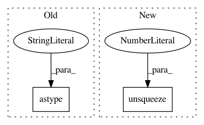

bed0a0ae26451c9897cf1ee0f7302e42eba9b42c,transformer/Models.py,,get_attn_subsequent_mask,#Any#,31
Before Change
assert seq.dim() == 2
attn_shape = (seq.size(0), seq.size(1), seq.size(1))
subsequent_mask = np.triu(np.ones(attn_shape), k=1).astype("uint8")
subsequent_mask = torch.from_numpy(subsequent_mask)
if seq.is_cuda:
subsequent_mask = subsequent_mask.cuda()
return subsequent_mask
After Change
subsequent_mask = torch.ones((len_s, len_s), device=seq.device, dtype=torch.uint8)
subsequent_mask = torch.triu(subsequent_mask, diagonal=1)
subsequent_mask = subsequent_mask.unsqueeze(0).expand(sz_b, len_s, len_s)
return subsequent_mask
class Encoder(nn.Module):
In pattern: SUPERPATTERN
Frequency: 3
Non-data size: 2
Instances
Project Name: jadore801120/attention-is-all-you-need-pytorch
Commit Name: bed0a0ae26451c9897cf1ee0f7302e42eba9b42c
Time: 2018-08-23
Author: yhhuang@nlg.csie.ntu.edu.tw
File Name: transformer/Models.py
Class Name:
Method Name: get_attn_subsequent_mask
Project Name: ncullen93/torchsample
Commit Name: d000bae3a03681b11818e98c29a64a145e0ff1ec
Time: 2017-04-20
Author: ncullen@modv-vlan533.0018.apn.wlan.med.upenn.edu
File Name: torchsample/modules/example.py
Class Name:
Method Name:
Project Name: allenai/allennlp
Commit Name: e2f66c0de2600308044ec3ab7731dae9017378fa
Time: 2018-12-20
Author: vidurj@allenai.org
File Name: allennlp/modules/seq2seq_encoders/bidirectional_language_model_transformer.py
Class Name:
Method Name: subsequent_mask